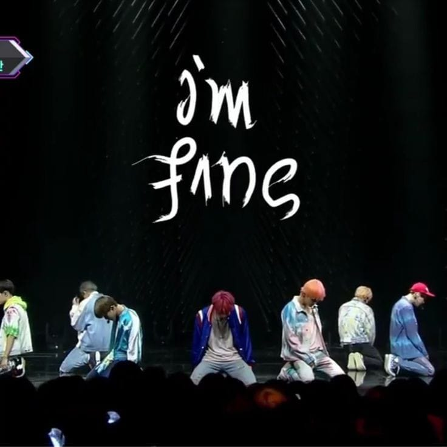

Cancionero |
||
|
|
I´M FINE 시리도록 푸른 하늘 아래 눈 떠흠뻑 쏟아지는 햇살이 날 어지럽게 해 한껏 숨이 차오르고 심장은 뛰어 No, no 느껴져 너무 쉽게 나 살아있다는 걸 No, no 괜찮아 우리가 아니어도 슬픔이 날 지워도 먹구름은 또 끼고 나 끝없는 꿈 속이어도 한없이 구겨지고 날개는 찢겨지고 언젠가 내가 내가 아니게 된달지어도 괜찮아 오직 나만이 나의 구원이잖아 못된 걸음걸이로 절대 죽지 않고 살아 How you doin'? Im fine 내 하늘은 맑아 모든 아픔들이여 say goodbye 잘 가 차가운 내 심장은 널 부르는 법을 잊었지만 외롭지 않은 걸 괜찮아 괜찮아 깜깜한 밤 어둠은 잠든 꿈을 흔들어 놓지만 두렵지 않은 걸 괜찮아 괜찮아 I'm feeling just fine, fine, fine 이젠 너의 손을 놓을게 I know I'm all mine, mine, mine 'Cause I'm just fine I'm feeling just fine, fine, fine 더 이상은 슬프지 않을래 I could see the sunshine, shine, shine 'Cause I'm just fine, just fine Hey, how are you? I'm just fine (hey) 내 아픔 다 (ho) 이겨낼 수 있어 너 없이 나 I'm just fine (hey) 걱정 마 (ho) 이젠 웃을 수 있고 네 목소린 모두 알아 주니까 I'm so fine, you so fine 슬픔과 상처는 모두 다 이미 지나간 추억이 됐으니 웃으며 보내주자고 we so fine I'm so fine, you so fine 우리들 미래는 기쁨만 가득할 테니 걱정은 접어둔 채 이젠 즐겨 수고했어 we so fine 차가운 내 심장은 널 부르는 법을 잊었지만 외롭지 않은 걸 괜찮아 괜찮아 깜깜한 밤 어둠은 잠든 꿈을 흔들어 놓지만 두렵지 않은 걸 괜찮아 괜찮아 I'm feeling just fine, fine, fine 이젠 너의 손을 놓을게 I know I'm all mine, mine, mine 'Cause I'm just fine I'm feeling just fine, fine, fine 더 이상은 슬프지 않을래 I could see the sunshine, shine, shine 'Cause I'm just fine, just fine 혹시 너에게도 보일까 이 스산한 달빛이 너에게도 들릴까 woah 이 희미한 메아리가 I'm feeling just fine, fine, fine 혼자서라도 외쳐보겠어 되풀이될 이 악몽에 (악몽에) 주문을 걸어 I'm feeling just fine, fine, fine 몇 번이라도 되뇌보겠어 또 다시 쓰러진대도 난 괜찮아 I'm feeling just fine, fine, fine 혼자서라도 외쳐보겠어 되풀이될 이 악몽에 (악몽에) 주문을 걸어 I'm feeling just fine, fine, fine 몇 번이라도 되뇌보겠어 또 다시 쓰러진대도 난 괜찮아 I'm fine I'm fine |
|
| | ||